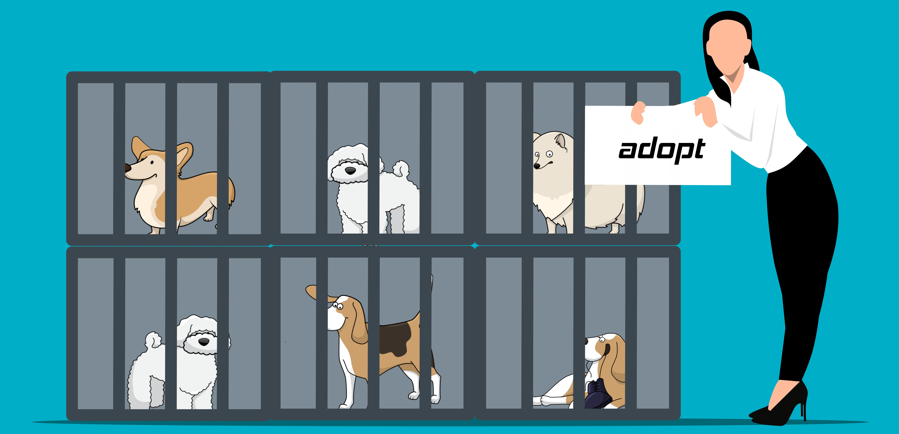

.jpg)
Iubire
.jpg)
Adăpost
.jpg)
Îngrijire de calitate
.jpg)
Asistență permanentă

Ana și Andrei, un cuplu iubitor de animale, s-au întâlnit la universitate și s-au îndrăgostit de ideea de a ajuta animalele fără adăpost.
În primii ani de căsătorie, au adunat și adăpostit animale rătăcite în propria casă, oferindu-le grijă și protecție. Cu sprijinul comunității, au extins inițiativa lor și au fondat un adăpost oficial pentru animale fără adăpost.
Cu multă pasiune și sacrificiu, au creat un loc sigur pentru sute de animale și au oferit șansa acestora la o viață mai bună. Astfel, au demonstrat că prin devotament și sprijin comunitar, se poate aduce o schimbare pozitivă în viața animalelor fără adăpost
Fiecare animal pe care-l întâlnim aici are o poveste unică și este parte din eforturile noastre de a oferi un adăpost sigur și iubitor pentru fiecare ființă în nevoie. Astăzi, vă invităm să descoperiți poveștile lor și să înțelegeți cum putem să le oferim sprijin și dragoste pentru a le oferi o nouă șansă la o viață fericită și împlinită.
Lili este extrem de prietenoasă și iubește să fie în mijlocul atenției, căutând mereu să se joace și să se alinte cu oricine îi oferă dragoste. Este un companion minunat, plin de afecțiune și loialitate.
Este extrem de jucaus și plin de curiozitate, fiind mereu dornic să exploreze și să interacționeze cu tot ce-l înconjoară. Chiar dacă uneori poate părea timid în prezența străinilor, își deschide rapid inima și devine o prezență prietenoasă și iubitoare odată ce se simte în siguranță.
.jpg)
Blana ei este moale și matasoasă, având un aspect plăcut și o textură minunată. Are ochi strălucitori și jucăuși, în nuanțe calde de maro sau chiar auriu, care emană un aer de bunătate și afecțiune. Cu o personalitate plină de veselie și tandrețe, Corina adoră să fie în centrul atenției și să primească dragoste.
Luigi este un bulldog cu o prezență fermă și robustă, caracteristică acestei rase. Are o înfățișare impresionantă, cu o talie medie spre mare, corp musculos și o expresie facială distinctivă. Blana sa este scurtă,de culoare maro conferindu-i un aspect robust și plin de personalitate..
Datortă donațiilor voastre, animalele noastre au parte de jucării și alte metode de distracție.
Cu sprijinul vostru reușim să le asigurăm animalelor noastre hrana necesară.
Animalele noastre se bucură de o îngrijire medicală aparte care porvine din donațiile voastre.
O parte din donații merg către menținerea adăpostului.